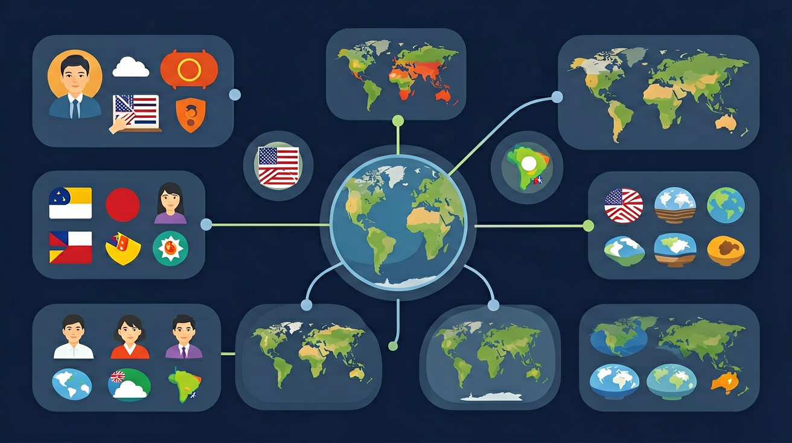

运用地图和相关资料，说出某国家的地理位置、范围、领土构成和首都，选择与该国地理位置差异明显的国家，比较它们纬度位置和海陆位置的差异。

🎯 能说出日本工业分布与港口的关系
🎯 能分析俄罗斯人口分布与气候的联系
🎯 能判断美国农业带形成的主要自然因素
❓ 为啥日本工业都挤在太平洋沿岸？
❓ 俄罗斯为啥人口全挤在西边？
❓ 美国农业带为啥像拼图一样整齐？
学完这一课，这些问题你都能自信地回答。
日本工业区主要分布在？
俄罗斯欧洲部分人口多的主要原因是？
世界主要国家（日/俄/美/澳/巴西等）是初中地理的重要内容。运用地图和相关资料，说出某国家的地理位置、范围、领土构成和首都，选择与该国地理位置差异明显的国家，比较它们纬度位置和海陆位置的差异。
运用地图和相关资料，描述某国家突出的自然地理特征。
点击时代/图层按钮切换地图；悬停边界，点击城市标记查看说明。
复制提示词到 AI 学伴，生成「世界主要国家（日/俄/美/澳/巴西等）」的示意图或结构提纲；也可以上传你手绘的示意图，请 AI 学伴点评。
复制后可粘贴到 AI 学伴继续对话。
关于国家与地理特征匹配正确的是
分析20世纪后期日本工业从'太平洋沿岸'向'海外转移'的原因
认识日本、俄罗斯、美国、澳大利亚、巴西等国家，要抓住位置、地形气候、资源、工农业与文化特征，形成“一个国家一张名片”。比较学习比孤立记忆更牢。
每个国家先定位半球与邻国，再记 1–2 个自然特征与 1–2 个经济特征。
常见误区：常见误区是堆砌知识点，缺少地图定位与比较。
学习国家地理最有效的抓手是？
1. 国际物流路径优化：马士基航运公司利用巴西地理特征设计南美航线，必须考虑里约热内卢（22°54′S）与桑托斯港（23°57′S）的季节性洋流变化。每年6-8月巴西暖流增强时，从中国出发的货轮需调整航向至外海，可节省12%燃油消耗，这直接运用了巴西大陆向东突出的地形与洋流相互作用知识。
2. 极地科研装备设计：俄罗斯东方站（78°28′S）使用的雪地车履带宽度达1.2米，这个参数源于对其永久冻土带承压能力的计算。工程师需精确掌握西伯利亚永久冻土区（占俄领土65%）夏季表层30cm融化的特性，否则会导致设备下陷——这正是冻土厚度与纬度关系知识的工程转化。
3. 跨境电商关税计算：日本亚马逊区分"本州岛配送"与"冲绳县配送"两种物流方案，因冲绳（26°30′N）与北海道（43°N）存在47%的关税差异。系统自动识别收货地经纬度匹配"特殊偏远岛屿振兴法"条款，这本质是日本领土狭长特性（从北到南跨越20个纬度）在数字经济的具象化应用。
1. 问题：为什么说"美国本土48州"的表述在分析农产品分布时存在缺陷？引导思考：注意阿拉斯加帕默（61°36′N）的极昼现象对温室农业的影响，对比德克萨斯州（31°N）棉花带的生长季长度。可查阅美国农业部划分的13个农业区地图，思考"本土"概念如何掩盖了纬度对耕作制度的决定性作用。
2. 问题：若巴西将首都迁回里约热内卢，会对区域发展产生什么连锁反应？分析线索：比较巴西利亚（15°47′S）当前作为内陆首都的规划理念——其扇形分区设计如何缓解沿海城市病；但考虑里约作为港口城市（22°54′S）的国际贸易便捷度，需要评估人口回流对东南部交通网络的压力，这涉及核心经济三角区（圣保罗-里约-贝洛奥里藏特）的重新平衡。
先要破解"国家地理定位密码"——以日本为例，其四个主岛（本州37°N、北海道43°N、九州33°N、四国34°N）构成独特的"新月形"岛链，这决定了它既受日本暖流增温增湿影响，又面临亚欧板块与太平洋板块碰撞的地震风险。接着对比澳大利亚，虽然同属岛国，但因独占整块大陆（南纬10°-43°），东部大分水岭阻挡了东南信风，导致内陆形成面积达1,371,000平方公里的沙漠。当分析俄罗斯时，从东欧平原（55°N）到楚科奇半岛（66°N）的1.1万公里跨度，使其同时拥有黑海度假区和永久冻土带，西伯利亚铁路的修建必须考虑-50℃极寒对铁轨收缩的影响。最后落实到方法应用：比较巴西与印度这两个"南半球vs北半球"的典型国家，前者亚马孙河（赤道附近）流量是恒河的3.2倍，这不仅是降水量差异，更关键的是巴西高原（22°S）向大西洋倾斜的地形导致水系集中，而印度德干高原（18°N）呈放射状分流。掌握这种"位置-地形-现象"的推理链条，才能解释为什么悉尼（34°S）与洛杉矶（34°N）同纬度却存在季节倒置现象。
1. 与历史的联动：国界变迁是地理与历史的交叉点。例如二战后《雅尔塔协定》（1945年）重塑欧洲版图，地理课上的现代波兰边界直接关联历史课中的"领土补偿"概念。学生可通过叠加历史条约地图与现代行政区划图，理解地缘政治对自然地理的改造。
2. 与信息技术的融合：GIS地理信息系统技术（如ArcGIS）能可视化国家统计数据。当学生用等值线图分析各国人口密度时，需同步运用信息技术课的栅格数据处理技能，将地理坐标数据转化为可交互的热力图，二者共同强化空间分析能力。
现代国家体系雏形可追溯至1648年《威斯特伐利亚和约》，该条约首次确立主权国家平等原则。19世纪"地理决定论"盛行时，德国地理学家拉采尔（1897年《政治地理学》）提出"国家有机体说"，将国土面积与国力直接挂钩，这种观点在二战期间被扭曲利用。二战后，法国地理学家戈特曼提出"枢纽区"理论（1950年代），强调城市群而非国界才是经济地理单元，直接影响了欧盟区域规划。2004年《人文地理学进展》期刊的"模糊边界"专题，则标志着学界对传统国界绝对性的反思，如今跨国界生态保护区（如欧洲多瑙河三角洲）已成为地理教学新案例。
你已经学过世界地理分区，具备继续探索的底座；在日常生活中，你也早就接触过与「世界主要国家（日/俄/美/澳/巴西等）」相关的现象。
但当问题换了一个情境出现——需要你解释原因、做出判断或解决实际任务时，仅凭零散的旧知识就很容易卡住。
所以本课用一个贯穿的情境任务，带你把「世界主要国家（日/俄/美/澳/巴西等）」拆成可操作的步骤：先看懂它，再动手试，最后用练习和迁移把它变成自己的能力。
1. 错误表现：将俄罗斯首都误认为圣彼得堡。认知根源在于学生常将最大城市与经济中心等同于首都，特别是圣彼得堡作为历史名城更易混淆。正确理解应为：莫斯科自1918年至今始终是俄罗斯联邦首都，其经纬度坐标（55°45′N,37°37′E）位于东欧平原中心，2023年人口约1260万，既是政治中心也是铁路枢纽，克里姆林宫所在地有明确的行政区划标识。
2. 错误表现：认为澳大利亚是单一大陆岛国。实际上其海外领地包括圣诞岛（10°29′S,105°38′E）等7个行政区。错误源于教材着重 mainland Australia 的讲解。正确认知需注意：澳领土横跨印度洋和太平洋，专属经济区达8,148,250平方公里，诺福克岛等领地使用澳元但拥有独特电话区号，这类细节在分析其海洋权益时至关重要。
3. 错误表现：低估美国领土跨度对气候的影响。常见误区是仅用"温带国家"概括，忽略其从阿拉斯加北极圈（71°23′N）到夏威夷热带（19°53′N）的纬度跨度。正确分析应对比：同纬度的纽约与北京气候差异显著——纽约1月均温0℃受墨西哥湾暖流影响，而北京同期-4℃且降水少34%，这源于海陆位置与洋流的复合作用。
先独立作答，再点选项查看对错与错因。
日本工业集中分布在太平洋沿岸的主要原因是
俄罗斯西伯利亚地区城市多沿铁路线分布，反映出该区域
澳大利亚被称为'骑在羊背上的国家'，其养羊业发达的自然条件不包括
巴西人口主要分布在____地区，这与____气候条件优越有关
答案：东南沿海,热带草原
东南部气候温和、交通便利，形成主要城市群
美国农业生产具有____特点，五大湖沿岸主要农业带是____
答案：地区专业化,乳畜带
美国根据自然条件实行专业化分区，五大湖地区适合牧草生长
【升学题】澳大利亚养羊业发达的自然条件组合正确的是：①气候干燥②地下水丰富③地形平坦④人口密集
【迁移题】若在巴西亚马孙河建水电站，可能遇到类似下列哪个国家的问题？
【综合题】美国玉米带与巴西咖啡带共同的区位优势是？
✅ 首都是堪培拉，悉尼是最大城市
💡 混淆政治中心与经济中心
✅ 南部有亚热带季风区，圣保罗会下霜
💡 忽视国家纬度跨度
口诀：日本靠海俄罗斯冷，美国农业带分明
类比：国家分布像火锅食材——日本是涮海鲜，俄罗斯是冻豆腐